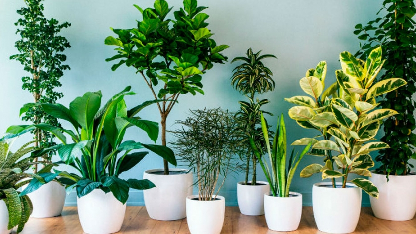
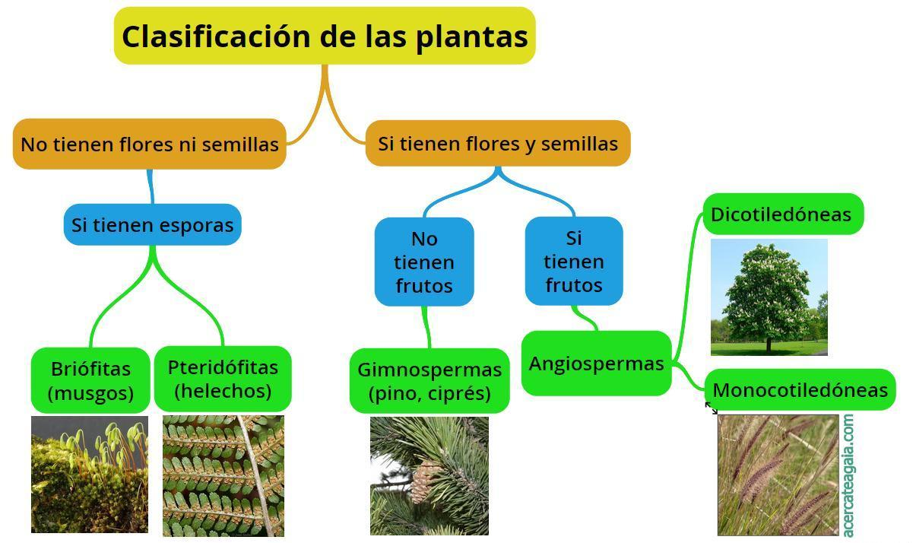
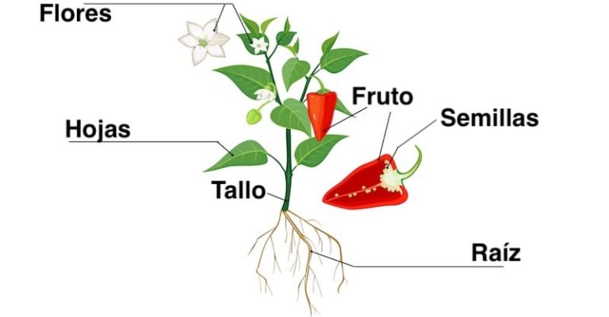

| Características generales de las plantas |
- Nutrición autótrofa. Lo cual quiere decir que generan su propio alimento a partir de materia inorgánica (agua y sustancias del suelo y el aire) y luz solar (radiación ultravioleta). A este complejo proceso de fabricación de carbohidratos se le conoce como fotosíntesis.
- Ausencia de locomoción. Es decir, son seres incapaces de desplazarse a voluntad (a diferencia de los animales). Algunas de ellas cambian de hábitat a merced de las aguas (algas y demás plantas acuáticas).
- Células dotadas de pared celular. O sea, que sus células presentan una estructura rígida de celulosa que recubre su membrana plasmática, confiriéndoles dureza, resistencia, pero haciendo más lento y complicado el proceso de crecimiento.
|
 |
| Tipos de plantas |
- Plantas terrestres vasculares. Conocidas como “plantas superiores”, presentan una estructura corporal completa: tallos, raíces, hojas y mecanismos de transporte interno (mecanismos vasculares) que comunican sus órganos y recorren la distancia de sus tallos. Al mismo tiempo, las plantas superiores se dividen en:
- Pteridofitas. Plantas superiores sin semillas, comúnmente conocidas como helechos. Tienen hojas largas y enrolladas conocidas como frondes, y pueden crecer hasta un tamaño considerable.
- Espermatofitas. Plantas superiores con semillas, posteriores a los helechos en el árbol evolutivo. Este grupo lo componen las angiospermas (plantas de flores vistosas y mucho polen) y las gimnospermas (plantas leñosas), y es el grupo predominante en el planeta.
- Plantas terrestres no vasculares. Plantas que no tienen estructuras vasculares internas, por lo que no presentan una división clara entre tallo, raíz y hojas, ni alcanzan mucho tamaño. Son un grupo a medias entre helechos y algas, como las briofitas, por ejemplo, comúnmente conocidas como musgo.
|
 |
| Partes de una planta |
- Raíz
- El órgano fundamental de todo tipo de plantas, que sirve para absorber el agua y los nutrientes del medio en que se encuentran, sea líquido o sólido.
- Tallo
- Los tallos son prolongaciones aéreas de la planta, que crecen en sentido contrario de la raíz y poseen generalmente un sistema de vasos conductores para transportar la savia y los nutrientes hacia los demás órganos, como las hojas.
- Hojas
- Órganos de diversa forma (redonda, alargada), color (entre verde y rojo) y textura en los que se realiza la fotosíntesis. Nacen del tallo o en las ramas, y dependiendo de la especie vegetal, pueden secarse y caer ante la llegada del frío (el otoño) para disminuir la pérdida de agua del árbol, o no.
- Flores
- Se trata de los órganos reproductivos de las plantas, de los cuales se generan luego los frutos y las semillas. Se componen generalmente de estambres (órganos sexuales masculinos) y pistilos (órganos sexuales femeninos), aunque existen plantas de un único sexo definido.
- Semillas
- Una vez fecundadas las flores, las plantas producen semillas, que son embriones listos para producir un nuevo individuo. En ocasiones estas semillas se producen sin necesidad de flores y fecundación, todo depende de la especie.
- Frutos
- Recubrimientos carnosos o secos de las semillas de una planta, generalmente nutritivos, garantizándole así al embrión el sustento fértil para su germinación cuando caiga o, por el contrario, ayudándolo a desplazarse lejos de la sombra del progenitor, al ser comidas y luego defecadas por algunos animales.
|
 |